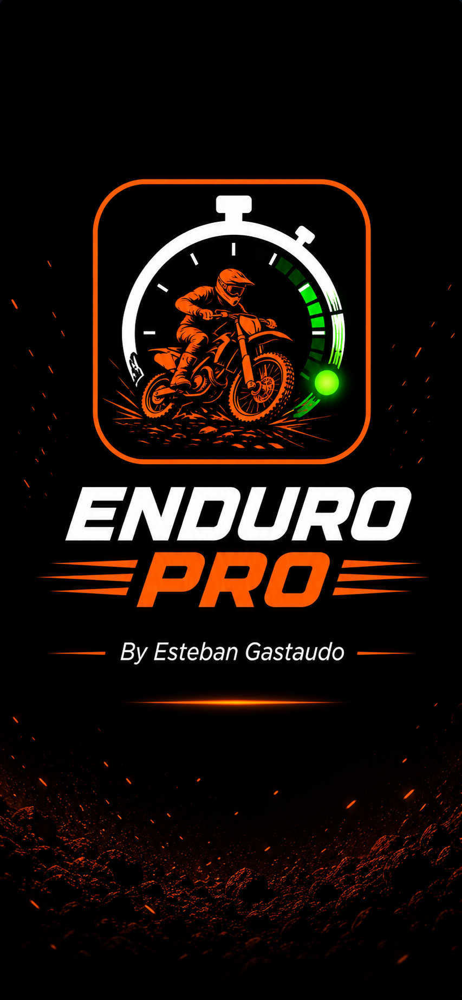

ENDURO SOLO
START
Tocá para encender

🏁 Enduro Solo
🔋
--%
00:00.00
Listo
Iniciar
Solo botones
Finalizar tanda
Reset tiempo
Exportar jornada
Vaciar tanda
Nueva jornada
Botón Bluetooth directo al iPhone. Cada pulsación registra tu paso.
Para mostrar u ocultar el teclado, mantené apretado el botón durante 2 segundos con el cronómetro pausado.
Configuración
Cuenta inicial (seg)
Gap largada (seg)
Anti doble-tap (ms)
Parciales
OFF (solo vuelta)
ON (2 parciales)
ON (3 parciales)
Pista / Lugar
Nombre tanda
Notas tanda
Seteo / notas
+ Agregar piloto
Restaurar nombres
Historial de jornada
PREPARADOS
20
Pantalla de largada
PANTALLA BLOQUEADA
Solo responde al botón Bluetooth
Mantener 3 segundos para desbloquear
ENDURO SOLO
V0.3
Batería + teclado